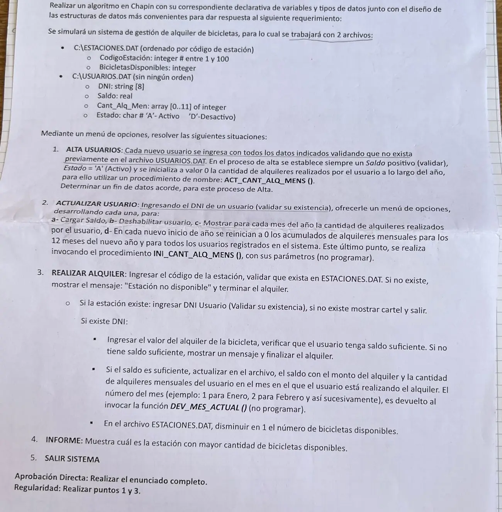

3° parcial o globalizador, 20/11/2024 (Alquiler de bicicletas)
3° parcial y final, 20/11/2024
Enunciado


Propuesta de respuesta
Respuesta no verificada. La propuso Luta Studios con inteligencia artificial y ningún docente la revisó. Puede tener errores.
La hoja pide el diagrama de Chapin. Va un diagrama por módulo, con su declaración de variables arriba, y primero el del programa principal. Si un diagrama no entra en la pantalla, tocalo para verlo completo. Después de los diagramas está el mismo algoritmo en Python, para que lo puedas probar. Las sentencias de archivos van con las palabras reservadas de Python (open, pickle.load, pickle.dump, seek, tell). Los textos se completan con ljust para que los registros midan lo mismo. El tamaño de un registro sale de tell() después de leer el primero.
Menú iterativo
Búsquedas
1. Alta usuarios
2. Actualizar usuario, con submenú
3. Realizar alquiler
4. Informe
El mismo algoritmo en Python
Es el programa que se probó, con las mismas sentencias y en el mismo orden que las cajas. Cada Leer del diagrama es un input, convertido a int o float según la declaración, y cada Mostrar es un print.
import os
import pickle
class Estacion:
def __init__(self):
self.codigoEstacion = 0
self.bicicletasDisponibles = 0
class Usuario:
def __init__(self):
self.dni = ""
self.saldo = 0.0
self.cantAlqMen = [0]*12
self.estado = ""
# afEstaciones, afUsuarios: str
# alEstaciones, alUsuarios: archivo
# tamEst: int
afEstaciones = "C:\\ESTACIONES.DAT"
afUsuarios = "C:\\USUARIOS.DAT"
alEstaciones = open(afEstaciones, "r+b")
alUsuarios = open(afUsuarios, "r+b")
pickle.load(alEstaciones)
tamEst = alEstaciones.tell()
def BUSCA_USUARIO(dni):
# Secuencial: USUARIOS.DAT no tiene orden. Devuelve el byte donde empieza o -1
# dni: str
# tam, pos, p: int
# reg: Usuario
tam = os.path.getsize(afUsuarios)
pos = -1
alUsuarios.seek(0, 0)
while alUsuarios.tell() < tam and pos == -1:
p = alUsuarios.tell()
reg = pickle.load(alUsuarios)
if reg.dni == dni:
pos = p
return pos
def BUSCA_ESTACION(cod):
# Dicotómica: ESTACIONES.DAT está ordenado por código
# cod, inicio, fin, medio, pos: int
# reg: Estacion
inicio = 0
fin = os.path.getsize(afEstaciones) // tamEst - 1
pos = -1
while inicio <= fin and pos == -1:
medio = (inicio + fin) // 2
alEstaciones.seek(medio * tamEst, 0)
reg = pickle.load(alEstaciones)
if reg.codigoEstacion == cod:
pos = medio
elif cod < reg.codigoEstacion:
fin = medio - 1
else:
inicio = medio + 1
return pos
def ACT_CANT_ALQ_MENS(v):
# v: arreglo [0..11] de int
# m: int
for m in range(12):
v[m] = 0
def GRABAR_USUARIO(reg, pos):
# reg: Usuario
# pos: int
alUsuarios.seek(pos, 0)
pickle.dump(reg, alUsuarios)
alUsuarios.flush()
def ALTA_USUARIOS():
# dni: str
# reg: Usuario
# Fin de datos: DNI "*"
dni = input("DNI (* para terminar): ")
while dni != "*":
dni = dni.ljust(8, " ")
if BUSCA_USUARIO(dni) != -1:
print("Ese usuario ya existe")
else:
reg = Usuario()
reg.dni = dni
reg.saldo = float(input("Saldo: "))
while reg.saldo <= 0:
reg.saldo = float(input("El saldo tiene que ser positivo: "))
reg.estado = "A"
ACT_CANT_ALQ_MENS(reg.cantAlqMen)
GRABAR_USUARIO(reg, os.path.getsize(afUsuarios))
dni = input("DNI (* para terminar): ")
def ACTUALIZAR_USUARIO():
# dni, op: str
# pos, m: int
# monto: float
# reg: Usuario
dni = input("DNI: ").ljust(8, " ")
pos = BUSCA_USUARIO(dni)
while pos == -1:
dni = input("No existe, ingrese otro DNI: ").ljust(8, " ")
pos = BUSCA_USUARIO(dni)
op = ""
while op != "e":
print("a- Cargar saldo")
print("b- Deshabilitar usuario")
print("c- Alquileres por mes")
print("d- Inicio de año")
print("e- Volver")
op = input("Opción: ")
while op != "a" and op != "b" and op != "c" and op != "d" and op != "e":
op = input("Opción inválida: ")
alUsuarios.seek(pos, 0)
reg = pickle.load(alUsuarios)
match op:
case "a":
monto = float(input("Monto a cargar: "))
while monto <= 0:
monto = float(input("Tiene que ser positivo: "))
reg.saldo = reg.saldo + monto
GRABAR_USUARIO(reg, pos)
case "b":
reg.estado = "D"
GRABAR_USUARIO(reg, pos)
case "c":
for m in range(12):
print("Mes", m + 1, ":", reg.cantAlqMen[m])
case "d":
INI_CANT_ALQ_MENS(alUsuarios, afUsuarios)
def ALQUILER():
# cod, posE, posU: int
# dni: str
# valor: float
# est: Estacion
# reg: Usuario
cod = int(input("Código de estación: "))
posE = BUSCA_ESTACION(cod)
if posE == -1:
print("Estación no disponible")
else:
alEstaciones.seek(posE * tamEst, 0)
est = pickle.load(alEstaciones)
dni = input("DNI: ").ljust(8, " ")
posU = BUSCA_USUARIO(dni)
if posU == -1:
print("No existe ese usuario")
elif est.bicicletasDisponibles == 0:
print("Estación no disponible: no le quedan bicicletas")
else:
alUsuarios.seek(posU, 0)
reg = pickle.load(alUsuarios)
if reg.estado == "D":
print("El usuario está deshabilitado")
else:
valor = float(input("Valor del alquiler: "))
if reg.saldo < valor:
print("Saldo insuficiente")
else:
reg.saldo = reg.saldo - valor
reg.cantAlqMen[DEV_MES_ACTUAL() - 1] = reg.cantAlqMen[DEV_MES_ACTUAL() - 1] + 1
GRABAR_USUARIO(reg, posU)
est.bicicletasDisponibles = est.bicicletasDisponibles - 1
alEstaciones.seek(posE * tamEst, 0)
pickle.dump(est, alEstaciones)
alEstaciones.flush()
print("Alquiler registrado")
def INFORME():
# tam, codMax, dispMax: int
# est: Estacion
tam = os.path.getsize(afEstaciones)
dispMax = -1
codMax = 0
alEstaciones.seek(0, 0)
while alEstaciones.tell() < tam:
est = pickle.load(alEstaciones)
if est.bicicletasDisponibles > dispMax:
dispMax = est.bicicletasDisponibles
codMax = est.codigoEstacion
print("Estación con más bicicletas disponibles:", codMax, "con", dispMax)
# Programa principal
# opcion: int
opcion = 0
while opcion != 5:
print("1. Alta usuarios")
print("2. Actualizar usuario")
print("3. Realizar alquiler")
print("4. Informe")
print("5. Salir sistema")
opcion = int(input("Opción: "))
while opcion < 1 or opcion > 5:
opcion = int(input("Opción inválida: "))
match opcion:
case 1:
ALTA_USUARIOS()
case 2:
ACTUALIZAR_USUARIO()
case 3:
ALQUILER()
case 4:
INFORME()
alEstaciones.close()
alUsuarios.close()Respuesta no verificada. Puede tener errores.
Se armó con la hoja del examen y la página del 3° parcial y final (registros como clase, recorrer, búsquedas, actualizar un registro y alta). Las operaciones de archivos siguen las diapositivas de merge y corte de control. El Chapin sigue la forma de las diapositivas del examen de Historia Clínica de 2019. La baja lógica con el campo Estado sigue la sección «Alta, baja y modificación».
Quedó en duda: Antes de alquilar se controla que la estación tenga bicicletas y que el usuario no esté deshabilitado. La hoja no lo pide, pero sin eso las bicicletas podrían quedar en negativo. INI_CANT_ALQ_MENS recibe el archivo y su ruta, porque tiene que recorrer todos los usuarios. Se invoca y no se programa. DEV_MES_ACTUAL() devuelve el mes de 1 a 12, así que se resta 1 para el índice. El fin de datos del alta es el DNI *. En Python, pickle graba un entero menor que 256 en menos bytes que uno más grande. Por eso un contador de alquileres o un total de bicicletas que cruza 255 cambia el tamaño del registro. Entonces el registro deja de coincidir con la posición que calcula el programa. El material pide registros del mismo tamaño y solo muestra cómo lograrlo con textos (ljust). Las pruebas se hicieron con datos que no cambian el tamaño. Las diapositivas de la materia no muestran en Chapin la lectura de datos ni la selección múltiple. Acá van como Leer y como Según, con una columna por caso.
¿Cómo te fue?
Marcá cada tema del examen.
- ArchivosSecuencial y de acceso directo, en 3° parcial y final
- RegistrosRegistros, en 3° parcial y final
- MenúMenú iterativo, en 1° parcial